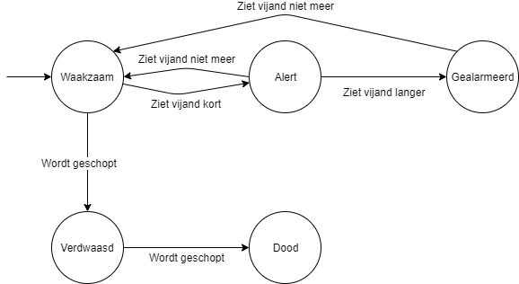
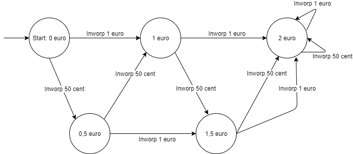
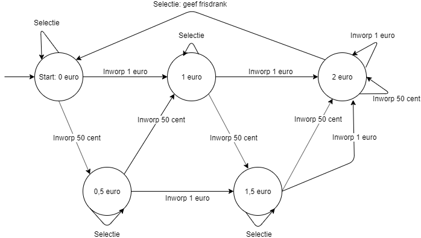

Ontwerpen met behulp van toestandsdiagrammen
Contents
Ontwerpen met behulp van toestandsdiagrammen#
Inleiding#
In deze module leer je te werken met toestandsdiagrammen. Als introductie daarop kun je met de gehele klas de volgende opdracht doen.
Opdracht 5 (Toestanden in games)
Bekijk gezamenlijk het volgende fragment uit een game waarin de hoofdrolspeler een bewaker moet proberen uit te schakelen. Kijk goed naar de bewaker en beschrijf in welke toestanden de bewaker kan zijn. Beschrijf ook hoe de bewaker in elk van die toestanden terecht komt. Met andere woorden: wat moet er gebeuren voordat de bewaker in een bepaalde toestand terecht komt.
Automaat bewaker
Toestanden#
Wellicht heb je de volgende toestanden gevonden, ook al noem je ze waarschijnlijk anders
Waakzaam, rondkijkend
Alert, klaar voor actie, rondkijkend
Gealarmeerd, achter vijand aan lopend
Verdwaasd, rondlopend
Dood
Op basis van deze toestanden kun je een toestandsdiagram maken, waarin duidelijk wordt hoe de bewaker van de ene toestand in de andere komt. De getallen geven de toestanden aan zoals hierboven staat beschreven.
{kind=link}

Fig. 16 Toestandsdiagram bewaker#
Je kunt in het toestandsdiagram bijvoorbeeld zien dat als de bewaker in toestand 1 is en hij ziet een vijand, dan wordt de toestand van de bewaker 2.
In de bovenstaande uitwerking zie je totaal 5 toestanden en 6 toestandsovergangen. Misschien zijn er wel meer hoor, alleen in dit korte fragment kun je ze niet allemaal zien.
Het losse pijltje naar toestand 1 betekent dat dit de begintoestand is, oftewel de initiële toestand.
Opdracht 6 ((unplugged) Nooddienstregeling bij de spoorwegen)
Je kunt ook als inleiding ook de unplugged activiteit doen die je via de onderstaande link vindt.
href http://www.informaticaunplugged.nl/de-werkvormen/nooddienstregeling-bij-de-spoorwegen/
Frisdrankautomaat#
Hieronder zie je een voorbeeld van een onderdeel van een frisdrankautomaat. Dit onderdeel houdt bij hoeveel geld de gebruiker van de automaat heeft ingeworpen. Voor het gemak gaan we uit van slechts twee munten: 50 cent en 1 euro. En alle frisdranken in de automaat kosten 2 euro.
{kind=link}

Fig. 17 Toestandsdiagram frisdrankautomaat#
De bollen zijn toestanden. Dit toestandsdiagram kent dus vijf toestanden. De frisdrankautomaat begint in de starttoestand, dat is in dit geval de toestand ‘Start: 0 euro’. Bij elke toestand zie je enkele overgangen. Bijvoorbeeld de overgang van de starttoestand ‘0 euro’ naar ‘0,5 euro’. Die toestandsovergang vindt plaats als de gebruiker begint met het inwerpen van een muntstuk van 50 eurocent.
Je ziet dat een toestandsovergang ook naar dezelfde toestand kan gaan. Kijk maar bij de toestand ‘2 euro’. Na de toestandsovergang ‘Inworp 50 cent’ is de toestand nog steeds ‘2 euro’.
Je kunt er zelf even mee oefenen. Klik op het plaatje hieronder om te activeren. Via de blauw en oranje knop kun je zogenaamd 50 cent of 1 euro inwerpen en dan zie je in welke toestand de automaat terecht komt.
Fig. 18 Toestandsdiagram frisdrankautomaat#
Een toestandsovergang wordt meestal uitgevoerd op basis van informatie uit één van de sensoren. Als iemand één euro in de frisdrankautomaat doet, wordt dat door één of meerdere sensoren gedetecteerd. Hoe dat precies werkt is hierbij niet belangrijk. Uit de toestandsdiagram kun je opmaken naar welke toestand de automaat moet gaan als iemand die euromunt inwerpt.
Vraag 10 - Frisdrankautomaat
Vul in. In welke toestand komt de automaat als iemand de volgende munten ingooit: 50 cent en nog eens 50 cent? Dat is toestand . In welke toestand komt de automaat als iemand de volgende munten ingooit: 50 cent, 1 euro, 1 euro? Dat is toestand . Het is (wel of niet?) mogelijk dat de automaat van de toestand ‘2 euro’ nog in een andere toestand komt.
hints
nog meer hints
Acties in een toestandsdiagram#
Het vorige toestandsdiagram is nog niet volledig, de gebruiker moet immers wel een frisdrank kunnen selecteren. In het volgende toestandsdiagram voegen we een overgang ‘selectie’ toe aan alle toestanden. ‘Selectie’ betekent dat de gebruiker een frisdrank kiest.
{kind=link}

Fig. 19 Toestandsdiagram frisdrankautomaat#
Aan een toestandsovergang kan een actie worden gekoppeld. Bij de frisdrankautomaat wordt de actie: ‘geef frisdrank’ uitgevoerd als de gebruiker een frisdrank selecteert en de toestand is: ‘2 euro’. Acties zijn altijd gekoppeld aan toestandsovergangen en niet aan toestanden. Een toestandsovergang mag één of meer acties hebben, maar dat hoeft niet. Voor het uitvoeren van acties worden vaak actuatoren gebruikt, zoals een lampje, display of motor.
In deze module gebruiken we steeds een dubbele punt om het onderscheid te maken tussen toestandsovergang en actie: <toestandsovergang> : <actie>
Vraag 11 - Werking frisdrankautomaat
Beschrijf de werking van deze frisdrankautomaat in 2 of 3 zinnen.